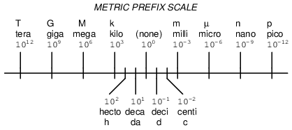
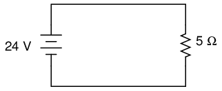
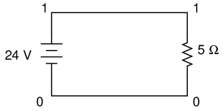
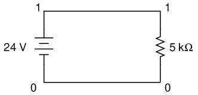

Notación Científica y Prefijos
Scientific notation
En muchas disciplinas de la ciencia y la ingeniería se deben gestionar cantidades numéricas muy grandes y muy pequeñas. Algunas de estas cantidades son alucinantes por su tamaño, ya sean extremadamente pequeñas o extremadamente grandes. Tomemos, por ejemplo, la masa de un protón, una de las partículas constituyentes del núcleo de un átomo:
Masa de protones = 0,00000000000000000000000167 gramos
O considere la cantidad de electrones que pasan por un punto de un circuito cada segundo con una corriente eléctrica constante de 1 amperio:
1 amp = 6,250,000,000,000,000,000 electrons per second
Muchos ceros, ¿no? Obviamente, puede resultar bastante confuso tener que manejar tantos dígitos cero en números como este, incluso con la ayuda de calculadoras y computadoras.
Tome nota de esos dos números y de la relativa escasez de dígitos distintos de cero en ellos. Para la masa del protón, todo lo que tenemos es un "167" precedido por 23 ceros antes del punto decimal. Para la cantidad de electrones por segundo en 1 amperio, tenemos "625" seguido de 16 ceros. Llamamos al intervalo de dígitos distintos de cero (del primero al último), más cualquier dígito ceronotSe utiliza simplemente para mantener un lugar, los "dígitos significativos" de cualquier número.
Los dígitos significativos en una medición del mundo real suelen reflejar la precisión de esa medición. Por ejemplo, si dijéramos que un automóvil pesa 3000 libras, probablemente no queremos decir que el automóvil en cuestión pesaexactamente 3.000 libras, sino que hemos redondeado su peso a un valor más cómodo de expresar y recordar. Esa cifra redondeada de 3.000 tiene solo un dígito significativo: el "3" al frente — los ceros simplemente sirven como marcadores de posición. Sin embargo, si dijéramos que el automóvil pesa 3.005 libras, el hecho de que el peso no esté redondeado al millar más cercano nos indica que los dos ceros del medio no son solo marcadores de posición, sino que los cuatro dígitos del número "3.005" son significativos para su precisión representativa. Por lo tanto, se dice que el número "3.005" tiene cuatro cifras significativas.
De la misma manera, los números con muchos dígitos cero no son necesariamente representativos de una cantidad del mundo real hasta el punto decimal. Cuando se sabe que este es el caso, dicho número se puede escribir en una especie de "taquigrafía" matemática para que sea más fácil de manejar. Esta "taquigrafía" se llamanotación científica.
Con la notación científica, un número se escribe representando sus dígitos significativos como una cantidad entre 1 y 10 (o -1 y -10, para números negativos), y los ceros "marcadores de posición" se representan mediante un multiplicador de potencia de diez. Por ejemplo:
1 amp = 6,250,000,000,000,000,000 electrons per second
. . . se puede expresar como . . .
1 amp = 6.25 x 1018electrones por segundo
10 to the 18th power (1018) significa 10 multiplicado por sí mismo 18 veces, o un "1" seguido de 18 ceros. Multiplicado por 6,25, parece "625" seguido de 16 ceros (tome 6,25 y omita el punto decimal 18 lugares a la derecha). Las ventajas de la notación científica son obvias: el número no es tan difícil de manejar cuando se escribe en papel y los dígitos significativos son fáciles de identificar.
Pero ¿qué pasa con números muy pequeños, como la masa del protón en gramos? Todavía podemos usar la notación científica, excepto con una potencia de diez negativa en lugar de positiva, para desplazar el punto decimal hacia la izquierda en lugar de hacia la derecha:
Masa de protones = 0,00000000000000000000000167 gramos
. . . se puede expresar como . . .
Masa del protón = 1,67 x 10-24gramos
10 to the -24th power (10-24) significa el inverso (1/x) de 10 multiplicado por sí mismo 24 veces, o un "1" precedido por un punto decimal y 23 ceros. Multiplicado por 1,67, parece "167" precedido por un punto decimal y 23 ceros. Al igual que con los números muy grandes, al ser humano le resulta mucho más fácil manejar esta notación "taquigráfica". Al igual que en el caso anterior, los dígitos significativos de esta cantidad están claramente expresados.
Debido a que los dígitos significativos se representan "por sí solos", lejos del multiplicador de potencia de diez, es fácil mostrar un nivel de precisión incluso cuando el número parece redondo. Tomando nuestro ejemplo del automóvil de 3000 libras, podríamos expresar el número redondeado de 3000 en notación científica como tal:
peso del auto = 3 x 103libras
Si el automóvil realmente pesara 3005 libras (con precisión a la libra más cercana) y quisiéramos poder expresar esa precisión total de la medición, la cifra en notación científica podría escribirse así:
peso del auto = 3.005 x 103libras
Sin embargo, ¿qué pasaría si el automóvil realmente pesara exactamente 3000 libras (a la libra más cercana)? Si tuviéramos que escribir su peso en forma "normal" (3000 libras), no necesariamente estaría claro que este número fuera exacto a la libra más cercana y no simplemente redondeado a las mil libras más cercanas, o a las cien libras más cercanas, o a las diez libras más cercanas. La notación científica, por otro lado, nos permite demostrar que los cuatro dígitos son significativos sin malentendidos:
peso del coche = 3.000 x 103libras
Dado que no tendría sentido agregar ceros adicionales a la derecha del punto decimal (los ceros de reserva son innecesarios con la notación científica), conocemos esos cerosdebeser significativo para la precisión de la figura.
Aritmética con notación científica
Los beneficios de la notación científica no terminan con la facilidad de escritura y la expresión de precisión. Esta notación también se presta bien a problemas matemáticos de multiplicación y división. Digamos que queremos saber cuántos electrones fluirían por un punto en un circuito que transporta 1 amperio de corriente eléctrica en 25 segundos. Si conocemos la cantidad de electrones por segundo en el circuito (lo cual sabemos), entonces todo lo que tenemos que hacer es multiplicar esa cantidad por la cantidad de segundos (25) para llegar a una respuesta del total de electrones:
(6.250.000.000.000.000.000 electrones por segundo) x (25 segundos) =
156,250,000,000,000,000,000 electrons passing by in 25 seconds
Usando notación científica, podemos escribir el problema así:
(6,25x1018electrones por segundo) x (25 segundos)
Si tomamos el "6,25" y lo multiplicamos por 25, obtenemos 156,25. Entonces, la respuesta podría escribirse como:
156.25 x 1018electrones
Sin embargo, si queremos cumplir con la convención estándar para la notación científica, debemos representar los dígitos significativos como un número entre 1 y 10. En este caso, diríamos "1,5625" multiplicado por alguna potencia de diez. Para obtener 1,5625 a partir de 156,25, tenemos que saltarnos la coma decimal dos lugares a la izquierda. Para compensar esto sin cambiar el valor del número, tenemos que aumentar nuestra potencia dos niveles (10 elevado a la potencia 20 en lugar de 10 a la 18):
1.5625 x 1020electrones
¿Y si quisiéramos ver cuántos electrones pasarían en 3.600 segundos (1 hora)? Para facilitar nuestro trabajo, también podríamos poner el tiempo en notación científica:
(6,25x1018electrones por segundo) x (3,6 x 103artículos de segunda clase)
Para multiplicar, debemos tomar los dos conjuntos significativos de dígitos (6,25 y 3,6) y multiplicarlos; y necesitamos tomar las dos potencias de diez y multiplicarlas. Tomando 6,25 por 3,6, obtenemos 22,5. Tomando 1018veces 103, obtenemos 1021(los exponentes con números de base comunes se suman). Entonces, la respuesta es:
22.5 x 1021electrones
. . . o más propiamente. . .
2.25 x 1022electrones
Para ilustrar cómo funciona la división con notación científica, podríamos calcular el último problema "al revés" para descubrir cuánto tiempo tardarían en pasar tantos electrones con una corriente de 1 amperio:
(2,25x1022electrones) / (6,25 x 1018electrones por segundo)
Al igual que en la multiplicación, podemos manejar los dígitos significativos y las potencias de diez en pasos separados (recuerde que se restan los exponentes de las potencias de diez divididas):
(2,25 / 6,25) x (1022/ 1018)
Y la respuesta es: 0,36 x 104, o 3,6 x 103, segundos. Puedes ver que llegamos a la misma cantidad de tiempo (3600 segundos). Ahora bien, quizás te preguntes cuál es el sentido de todo esto cuando tenemos calculadoras electrónicas que pueden manejar los cálculos automáticamente. Bueno, en la época en que los científicos e ingenieros utilizaban computadoras analógicas con "regla de cálculo", estas técnicas eran indispensables. La aritmética "dura" (que trata de las cifras de dígitos significativos) se realizaría con la regla de cálculo, mientras que las potencias de diez se podrían calcular sin ninguna ayuda, siendo nada más que simples sumas y restas.
- REVISAR:
- Los dígitos significativos son representativos de la precisión de un número en el mundo real.
- La notación científica es un método "taquigráfico" para representar números muy grandes y muy pequeños en una forma fácil de manejar.
- Al multiplicar dos números en notación científica, puedes multiplicar las dos cifras significativas y llegar a una potencia de diez sumando exponentes.
- Al dividir dos números en notación científica, puedes dividir las dos cifras de dígitos significativos y llegar a una potencia de diez restando exponentes.
Metric notation
El sistema métrico, además de ser un conjunto de unidades de medida para todo tipo de cantidades físicas, se estructura en torno al concepto de notación científica. La principal diferencia es que las potencias de diez se representan con prefijos alfabéticos en lugar de potencias de diez literales. La siguiente recta numérica muestra algunos de los prefijos más comunes y sus respectivas potencias de diez:

Mirando esta escala, podemos ver que 2,5 Gigabytes significarían 2,5 x 109bytes, o 2,5 mil millones de bytes. Asimismo, 3,21 picoamperios significarían 3,21 x 10-12amperios, o 3,21 1/billonésima parte de un amperio.
Existen otros prefijos métricos para simbolizar potencias de diez para multiplicadores extremadamente pequeños y extremadamente grandes. En el extremo extremadamente pequeño del espectro,femto(f) = 10-15, atto(un) = 10-18, zepto(z) = 10-21, yyocto(y) = 10-24. En el extremo extremadamente amplio del espectro,peta(P) = 1015, Exa(mi) = 1018, Zeta(Z) = 1021, yyota(Y) = 1024.
Debido a que los prefijos principales en el sistema métrico se refieren a potencias de 10 que son múltiplos de 3 (de "kilo" hacia arriba y de "mili" hacia abajo), la notación métrica difiere de la notación científica regular en que la mantisa puede estar entre 1 y 999, dependiendo del prefijo elegido. Por ejemplo, si una muestra de laboratorio pesa 0,000267 gramos, la notación científica y la notación métrica lo expresarían de manera diferente:
2.67 x 10-4gramos (notación científica)
267 µgrams (metric notation)
La misma cifra también puede expresarse como 0,267 miligramos (0,267 mg), aunque suele ser más común ver los dígitos significativos representados como una cifra mayor que 1.
En los últimos años ha surgido un nuevo estilo de notación métrica para cantidades eléctricas que busca evitar el uso del punto decimal. Dado que los puntos decimales ("".") se malinterpretan fácilmente y/o se "pierden" debido a una mala calidad de impresión, cantidades como 4,7 k pueden confundirse con 47 k. La nueva notación reemplaza el punto decimal con el carácter de prefijo métrico, de modo que "4,7 k" se imprime como "4k7". Nuestra última cifra del ejemplo anterior, "0,267 m", se expresaría en la nueva notación como "0m267".
- REVISAR:
- El sistema métrico de notación utiliza prefijos alfabéticos para representar ciertas potencias de diez en lugar de la notación científica más larga.
Metric prefix conversions
Para expresar una cantidad en un prefijo métrico diferente al que tenía originalmente, todo lo que necesitamos hacer es saltar el punto decimal hacia la derecha o hacia la izquierda según sea necesario. Observe que el prefijo métrico "recta numérica" en la sección anterior se presentó de mayor a menor, de izquierda a derecha. Este diseño se eligió deliberadamente para que sea más fácil recordar en qué dirección debe omitir el punto decimal para cualquier conversión determinada.
Problema de ejemplo: expresar 0,000023 amperios en términos de microamperios.
0.000023 amps (has no prefix, just plain unit of amps)
De UNIDADES a micro en la recta numérica hay 6 lugares (potencias de diez) a la derecha, por lo que debemos omitir el punto decimal 6 lugares a la derecha:
0.000023 amps = 23. , or 23 microamps (µA)
Problema de ejemplo: expresa 304,212 voltios en términos de kilovoltios.
304,212 volts (has no prefix, just plain unit of volts)
Desde(ninguno)lugar parakiloEl lugar en la recta numérica está 3 lugares (potencias de diez) a la izquierda, por lo que debemos omitir el punto decimal 3 lugares a la izquierda:
304,212. = 304.212 kilovolts (kV)
Problema de ejemplo: expresar 50,3 megaohmios en términos de miliohmios.
50.3 M ohms (mega = 106)
De mega a mili hay 9 lugares (potencias de diez) a la derecha (de 10 a la 6ª potencia a 10 a la -3ª potencia), por lo que debemos omitir el punto decimal 9 lugares a la derecha:
50.3 M ohms = 50,300,000,000 milli-ohms (mΩ)
- REVISAR:
- Siga la recta numérica del prefijo métrico para saber en qué dirección omite el punto decimal para fines de conversión.
- Un número sin punto decimal tiene un punto decimal implícito inmediatamente a la derecha del dígito más a la derecha (es decir, para el número 436 el punto decimal está a la derecha del 6, como tal: 436).
Hand calculator use
Para ingresar números en notación científica en una calculadora manual, generalmente hay un botón marcado "E" o "EE" que se usa para ingresar la potencia de diez correcta. Por ejemplo, para ingresar la masa de un protón en gramos (1,67 x 10-24gramos) en una calculadora manual, ingresaría las siguientes teclas:
[1] [.] [6] [7] [EE] [2] [4] [+/-]
La pulsación de tecla [+/-] cambia el signo de la potencia (24) a -24. Algunas calculadoras permiten el uso de la tecla de resta [-] para hacer esto, pero yo prefiero la tecla de "cambio de signo" [+/-] porque es más consistente con el uso de esa tecla en otros contextos.
Si quisiera ingresar un número negativo en notación científica en una calculadora manual, tendría que tener cuidado al usar la tecla [+/-], para no cambiar el signo de la potencia y no el valor del dígito significativo. Presta atención a este ejemplo:
Número a introducir: -3.221 x 10-15:
[3] [.] [2] [2] [1] [+/-] [EE] [1] [5] [+/-]
La primera pulsación de tecla [+/-] cambia la entrada de 3.221 a -3.221; la segunda pulsación de tecla [+/-] cambia la potencia de 15 a -15.
Mostrar notación métrica y científica en una calculadora manual es un asunto diferente. Implica cambiar la opción de visualización del modo normal de punto decimal "fijo" al modo "científico" o "de ingeniería". El manual de su calculadora le indicará cómo configurar cada modo de visualización.
Estos modos de visualización le indican a la calculadora cómo representar cualquier número en la lectura numérica. El valor real del número no se ve afectado de ninguna manera por la elección de los modos de visualización, sólo cómo aparece el número al usuario de la calculadora. Asimismo, el procedimiento para ingresar números en la calculadora tampoco cambia con los diferentes modos de visualización. Las potencias de diez suelen estar representadas por un par de dígitos en la esquina superior derecha de la pantalla y sólo son visibles en los modos "científico" e "ingeniería".
La diferencia entre los modos de visualización "científico" e "ingeniería" es la diferencia entre notación científica y métrica. En el modo "científico", la visualización de potencia de diez está configurada de modo que el número principal en la pantalla sea siempre un valor entre 1 y 10 (o -1 y -10 para números negativos). En el modo "ingeniería", las potencias de diez están configuradas para mostrarse en múltiplos de 3, para representar los principales prefijos métricos. Todo lo que el usuario tiene que hacer es memorizar algunas combinaciones de prefijo/potencia, ¡y su calculadora "hablará" métrica!
POWER METRIC PREFIX ----- ------------- 12 ......... Tera (T) 9 .......... Giga (G) 6 .......... Mega (M) 3 .......... Kilo (k) 0 .......... UNITS (plain) -3 ......... milli (m) -6 ......... micro (u) -9 ......... nano (n) -12 ........ pico (p)
- REVISAR:
- Utilice la tecla [EE] para ingresar potencias de diez.
- Utilice "científico" o "ingeniería" para mostrar potencias de diez, en notación científica o métrica, respectivamente.
Notación científica en SPICE
El programa informático de simulación de circuitos SPICE utiliza notación científica para mostrar su información de salida y puede interpretar tanto la notación científica como los prefijos métricos en los archivos de descripción del circuito. Si va a poder interpretar con éxito los análisis de SPICE a lo largo de este libro, debe poder comprender la notación utilizada para expresar variables de voltaje, corriente, etc. en el programa.
Comencemos con un circuito muy simple compuesto por una fuente de voltaje (una batería) y una resistencia:

Para simular este circuito usando SPICE, primero tenemos que designar números de nodo para todos los puntos distintos del circuito, luego enumerar los componentes junto con sus respectivos números de nodo para que la computadora sepa qué componente está conectado a cuál y cómo. Para un circuito de esta simplicidad, el uso de SPICE parece excesivo, pero sirve para demostrar el uso práctico de la notación científica:

Escribir un archivo de descripción de circuito, olista de redes, para este circuito, obtenemos esto:
simple circuit v1 1 0 dc 24 r1 1 0 5 .end
La línea "v1 1 0 pa 24" describe la batería, situada entre los nodos 1 y 0, con una tensión continua de 24 voltios. La línea "r1 1 0 5" describe la resistencia de 5 Ω colocada entre los nodos 1 y 0.
Usando una computadora para ejecutar un análisis SPICE en este archivo de descripción de circuito, obtenemos los siguientes resultados:
node voltage ( 1) 24.0000
voltage source currents name current v1 -4.800E+00 total power dissipation 1.15E+02 watts
SPICE nos dice que el voltaje "en" el nodo número 1 (en realidad, esto significa el voltaje entre los nodos 1 y 0, siendo el nodo 0 el punto de referencia predeterminado para todas las mediciones de voltaje) es igual a 24 voltios. La corriente a través de la batería "v1" se muestra como -4.800E+00 amperios. Este es el método de SPICE para denotar notación científica. Lo que realmente dice es "-4.800 x 100amperios", o simplemente -4,800 amperios. El valor negativo de la corriente aquí se debe a una peculiaridad de SPICE y no indica nada significativo sobre el circuito en sí. La "disipación de potencia total" se nos proporciona como 1,15E+02 vatios, lo que significa "1,15 x 102vatios", o 115 vatios.
Modifiquemos nuestro circuito de ejemplo para que tenga una resistencia de 5 kΩ (5 kiloohmios o 5000 ohmios) en lugar de una resistencia de 5 Ω y veamos qué sucede.

Una vez más está nuestro archivo de descripción de circuito, o "netlist:"
simple circuit v1 1 0 dc 24 r1 1 0 5k .end
La letra "k" que sigue al número 5 en la línea de la resistencia le dice a SPICE que es una cifra de 5 kΩ, no de 5 Ω. Veamos qué resultado obtenemos cuando ejecutamos esto a través de la computadora:
node voltage ( 1) 24.0000
voltage source currents name current v1 -4.800E-03 total power dissipation 1.15E-01 watts
El voltaje de la batería, por supuesto, no ha cambiado desde la primera simulación: sigue siendo de 24 voltios. La corriente del circuito, por otro lado, es mucho menor esta vez porque le hemos dado un valor mayor a la resistencia, lo que dificulta el flujo de electrones. SPICE nos dice que la corriente esta vez es igual a -4.800E-03 amperios, o -4.800 x 10-3amperios. Esto equivale a tomar el número -4,8 y saltar el punto decimal tres lugares a la izquierda.
Por supuesto, si reconocemos que 10-3es lo mismo que el prefijo métrico "mili", podríamos escribir la cifra como -4,8 miliamperios o -4,8 mA.
Si observamos la "disipación de potencia total" que nos proporcionó SPICE en esta segunda simulación, vemos que es 1,15E-01 vatios, o 1,15 x 10-1vatios. La potencia de -1 corresponde al prefijo métrico "deci", pero generalmente limitamos nuestro uso de prefijos métricos en electrónica a aquellos asociados con potencias de diez que son múltiplos de tres (diez elevado a la potencia de... -12, -9, -6, -3, 3, 6, 9, 12, etc.). Entonces, si queremos seguir esta convención, debemos expresar esta cifra de disipación de potencia como 0,115 vatios o 115 milivatios (115 mW) en lugar de 1,15 decivatios (1,15 dW).
Quizás la forma más sencilla de convertir una cifra de notación científica a prefijos métricos comunes es con una calculadora científica configurada en el modo de visualización "ingeniería" o "métrico". Simplemente configure la calculadora para ese modo de visualización, escriba cualquier cifra de notación científica usando las teclas adecuadas (consulte el manual del propietario), presione la tecla "igual" o "enter" y debería mostrar la misma cifra en notación de ingeniería/métrica.
Nuevamente, usaré SPICE como método para demostrar conceptos de circuitos a lo largo de este libro. En consecuencia, le conviene comprender la notación científica para poder comprender fácilmente su formato de datos de salida.
Colaboradores
Los contribuyentes a este capítulo se enumeran en orden cronológico de sus contribuciones, desde el más reciente hasta el primero. Consulte el Apéndice 2 (Lista de colaboradores) para fechas e información de contacto.
Jason Stark(Junio de 2000): Formato de documentos HTML, que dio lugar a una segunda edición mucho más atractiva.
Lecciones en circuitos eléctricoscopyright (C) 2000-2023 Tony R. Kuphaldt, según los términos y condiciones delCC BY License.